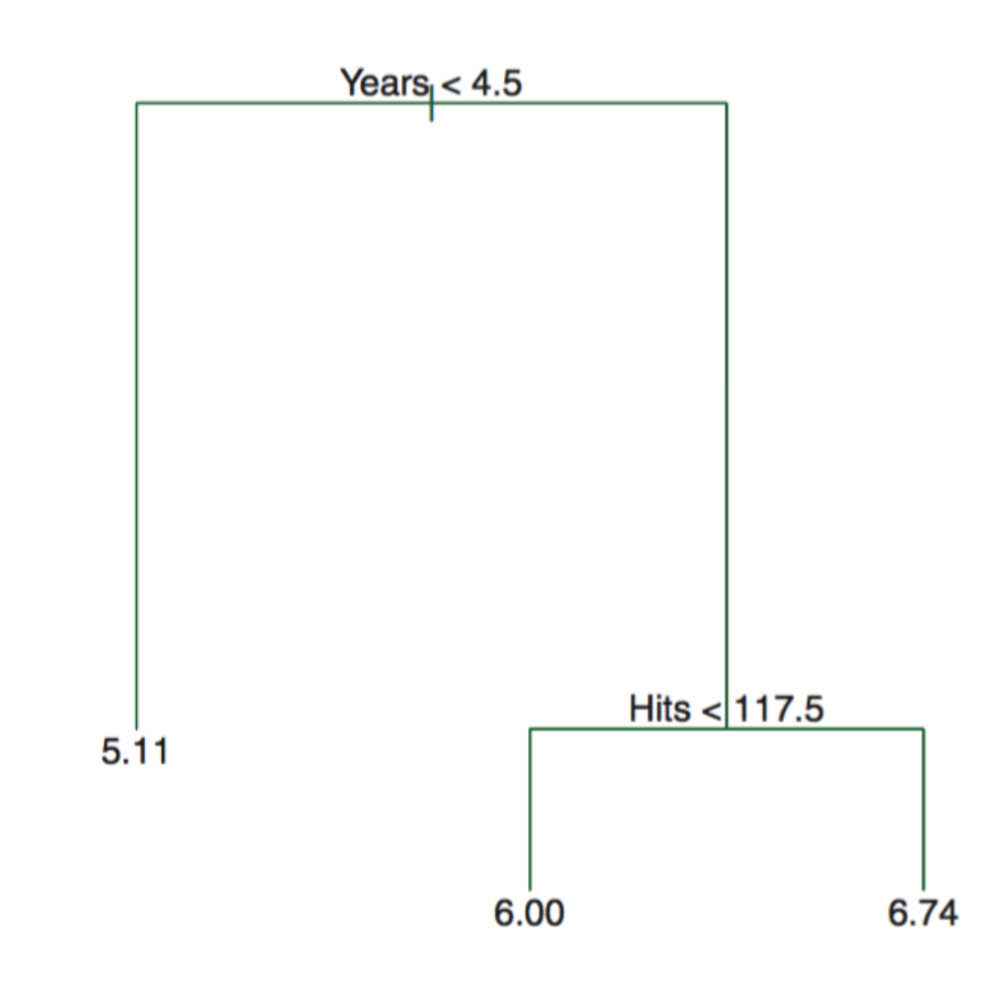
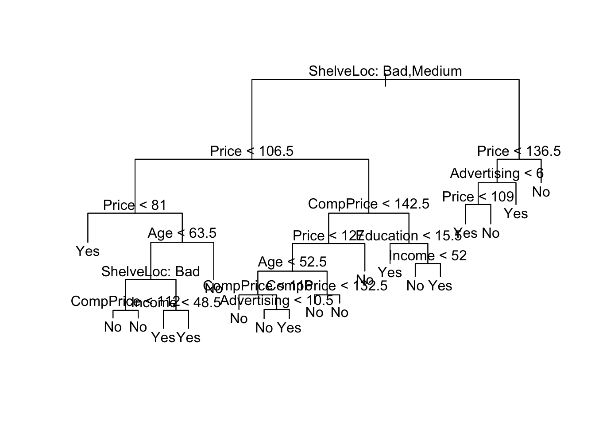
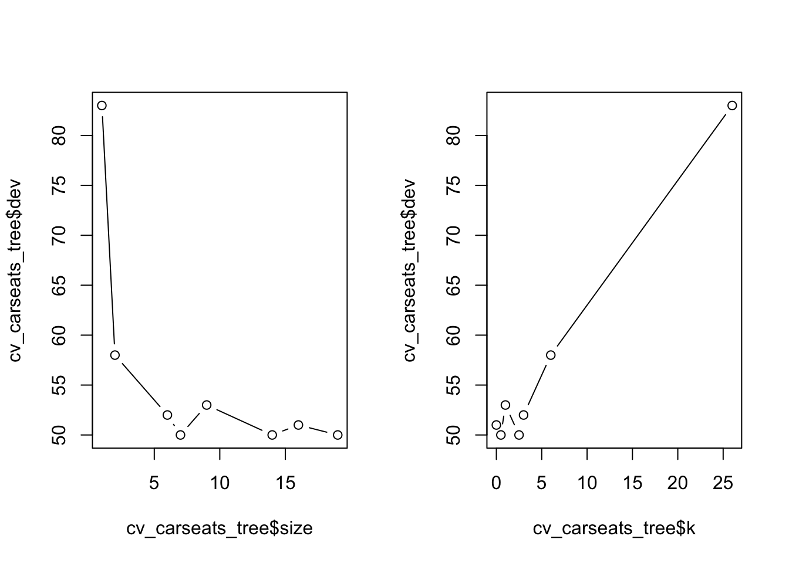
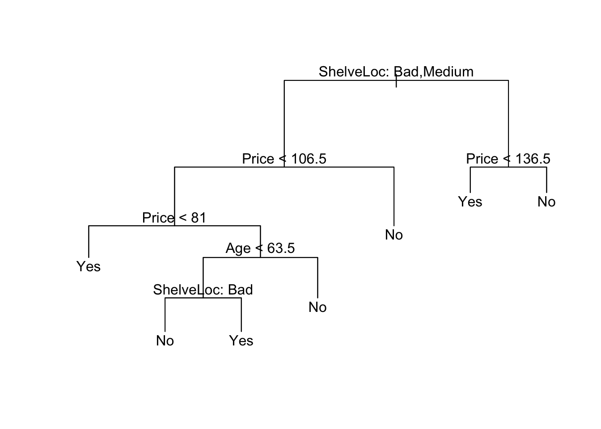
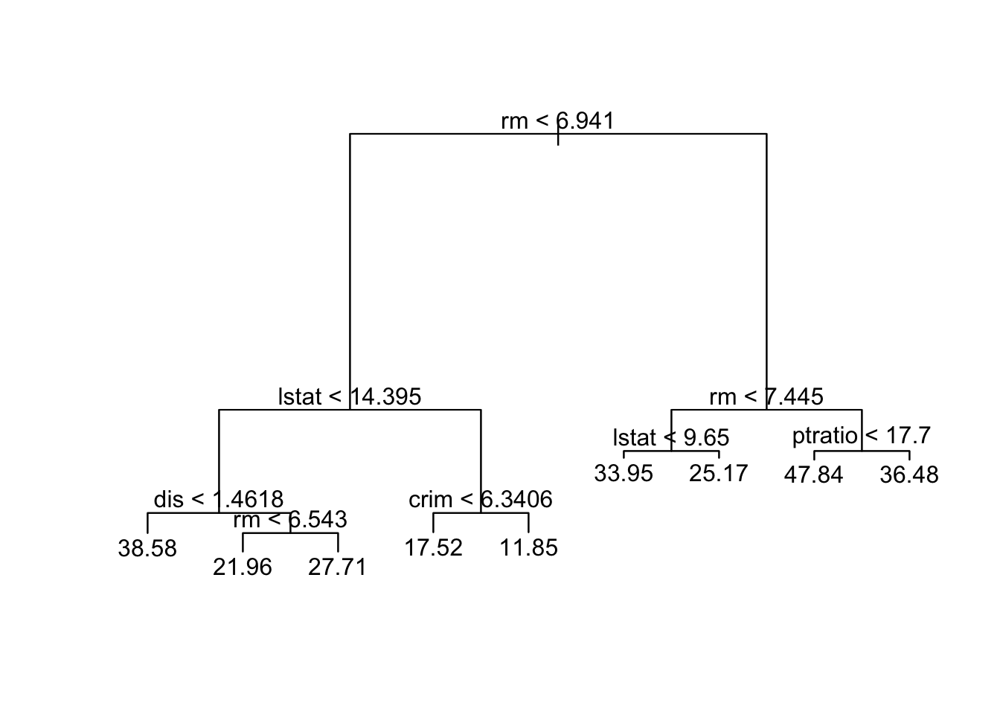
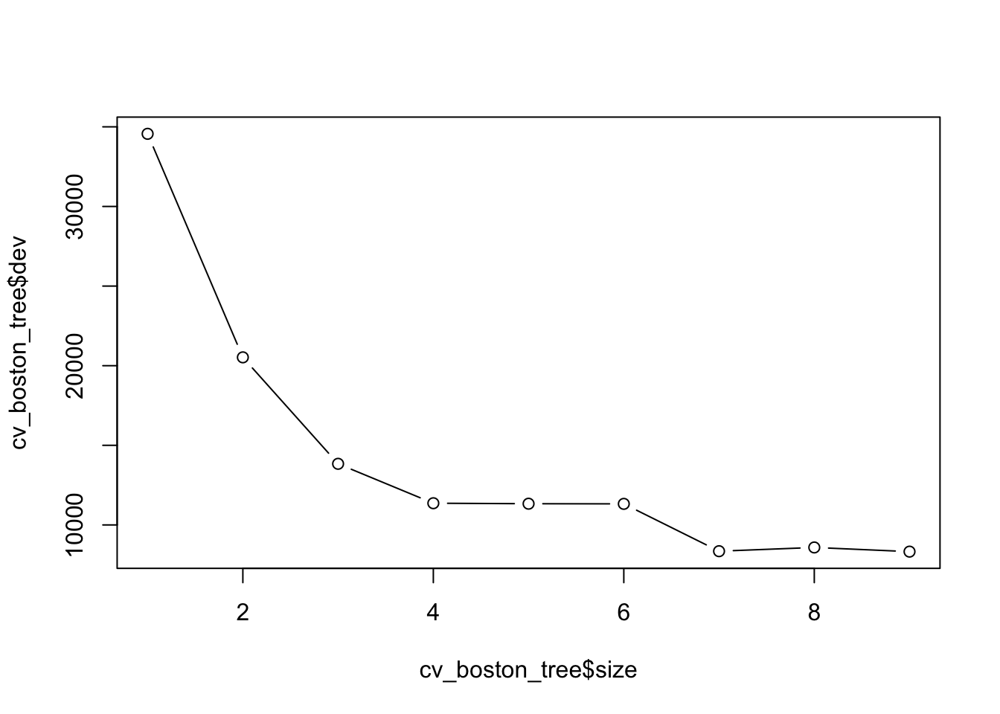
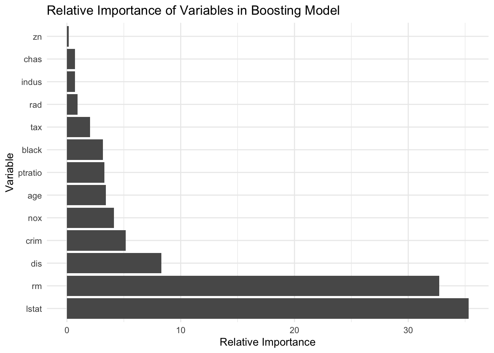
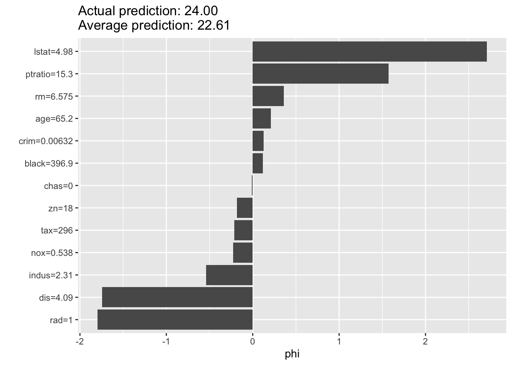

#install.packages("tree")
library(ISLR)
library(tree)
library(ggplot2)Section 8 - Tree-Based Methods
Notes
Note that more thorough treatment of these topics in Introduction to Statistical Learning by Gareth James, Daniela Witten, Trevor Hastie and Robert Tibshirani.
Tree-Based Methods
Tree-based methods are non-parametric supervised learning methods that stratify or segment the predictor space into a number of simple regions. They can be used for both regression and clas- sification. After building a tree using the training data, a prediction can be made by using the training observations in the region to which the new observation belongs. For a regression tree, the predicted response for an observation is given by the mean response of the training observations that belong to the same terminal node. In contrast, for a classification tree, we predict that each observation belongs to the most commonly occurring class of training observations in the region to which it belongs. Decision trees are simple and useful for interpretation. However, they typically have lower predictive power than other supervised learning methods. Bagging, random forests, and boosting are approaches to improve decision trees by involving multiple trees, which are then combined to yield a single consensus prediction. These approaches can dramatically improve the prediction accuracy of decision trees, at the expense of interpretability.
Decision Trees
To interpret a decision tree, suppose we have below tree from the Hitters data. The Figure represents a regression tree for predicting the log salary of a baseball player, based on the two predictors—the number of years that he has played in the major leagues and the number of hits that he made in the previous year. We can read the tree sequentially from top to bottom. At a given node (where the branches split), the label (of the form \(X_j < t_k\)) indicates the left-hand branch emanating from that split, and the right-hand branch corresponds to \(X_j \geq t_k\). For instance, the split at the top of the tree results in two large branches. The left-hand branch corresponds to \(Years < 4.5\) and the right-hand branch corresponds to \(Years \geq 4.5\). The number in each leaf (terminal nodes) is the mean of the response (outcomes) for the observations (in the training data) that fall there.

Decision trees are easier to interpret and have a nice graphical representation. Unfortunately, fitting a decision tree is not simple. It is computationally infeasible to consider every possible partition of the feature space into \(J\) boxes. For this reason, we take a top-down, greedy approach that is known as recursive binary splitting. The approach is top-down because it begins at the top of the tree (at which point all observations belong to a single region) and then successively splits the predictor space; each split is indicated via two new branches further down on the tree. It is greedy because, at each step of the tree-building process, the best split is made at that particular step, rather than looking ahead and picking a split that will lead to a better tree in some future step. In order to perform recursive binary splitting, we first select the predictor \(X_j\) and the cutpoint \(s\) such that splitting the predictor space into the regions \(\{X|X_j < s\}\) and \(\{X|X_j \geq s\}\) leads to the greatest possible reduction in RSS. For building a classification tree, alternatives to RSS are the classification error rate, Gini index, and entropy. Instead of the error rate, either the Gini index or the entropy are typically used to evaluate the quality of a particular split, since these two approaches are more sensitive to node purity than is the classification error rate.
Another problem with the decision tree is that the process described above may produce good predictions on the training set but is likely to overfit the data, leading to poor test set performance. A better strategy is to grow a very large tree and then prune it back in order to obtain a subtree. We can use the cross validation to prune the tree.
The advantages of trees are the following: (1) trees are very easy to explain; (2) trees can be displayed graphically and are easily interpreted even by a non-expert; (3) trees can easily handle qualitative predictors without the need to create dummy variables. Disadvantages of trees are the following: (1) trees generally do not have the same level of predictive accuracy as some of the other regression and classification approaches; (2) trees can be very non-robust, i.e., a small change in the data can cause a large change in the final estimated tree.
Bagging
Bagging, random forests, and boosting are approaches to improve decision trees by involving multiple trees, which are then combined to yield a single consensus prediction. To apply bagging to regression trees, we simply construct \(B\) regression trees using \(B\) bootstrapped training sets and average the resulting predictions. These trees are grown deep and are not pruned. Because the tree is not pruned, it means each tree is more flexible, hence high variance but low bias. Averaging these \(B\) trees reduces the variance because in statistics, averaging a set of observations reduces variance. For bagging classification trees, we can record the class predicted by each of the \(B\) trees, and take a majority vote (i.e., the most commonly occurring class among the \(B\) predictions).
We can also obtain an overall summary of the importance of each predictor using the RSS (for bagging regression trees) or the Gini index (for bagging classification trees). In the case of bagging regression trees, we can record the total amount that the RSS is decreased due to splits over a given predictor, averaged over all \(B\) trees. A large value indicates an important predictor.
Random forests
The main difference between bagging and random forests is the choice of predictor subset size m. When building decision trees in random forests, each time a split in a tree is considered, a random sample of m predictors is chosen as split candidates from the full set of p predictors. If a random forest is built using \(m = p\), then this amounts simply to bagging. Random forests can provide an improvement over bagged trees by decorrelating the trees, i.e., forcing the tree to consider different splits and thus avoid the situation when all trees to have similar structures due to a small subset of strong predictors. In general, using a small value of m in building a random forest will typically be helpful when we have a large number of correlated predictors.
Boosting
In boosting, each tree is grown using information from previously grown trees. Boosting does not involve bootstrap sampling, but instead, each tree is fit on a modified version of the original data set. Unlike in bagging, the construction of each tree depends strongly on the trees that have already been grown. Boosting involves the parameters that we have to determine. The shrinkage parameter \(\lambda\), a small positive number, controls the rate at which boosting learns. Very small \(\lambda\) can require using a very large value of B and thus achieve good performance. We also need to determine the number \(d\) of splits in each tree, which controls the complexity of the boosted ensemble. Similar to \(\lambda\), a small \(d\) can typically achieve a slower learn, which means better performance.
Code
Decision Trees
We will use the Carseats data. Sales in this data set is a continuous variable. We start by converting it to a binary one that equals “Yes” if Sales \(> 8\) and “No” otherwise.
carseat_data <- Carseats
high_sales <- as.factor(ifelse(carseat_data$Sales > 8, "Yes", "No"))
carseat_data <- data.frame(carseat_data, high_sales)
carseat_data = carseat_data[, -1]Let’s again split the data into training and test sets
set.seed(222)
train <- sample(seq(nrow(carseat_data)),
round(nrow(carseat_data) * 0.5))
train <- sort(train)
test <- which(!(seq(nrow(carseat_data)) %in% train))We can now train a decision tree using the function tree()
?treeHelp on topic 'tree' was found in the following packages:
Package Library
cli /opt/homebrew/lib/R/4.5/site-library
xfun /opt/homebrew/lib/R/4.5/site-library
tree /opt/homebrew/lib/R/4.5/site-library
Using the first match ...carseats_tree <- tree(high_sales ~ .,
data = carseat_data[train,])Plot the results
plot(carseats_tree)
text(carseats_tree, pretty = 0)
From this, we see that shelving location seems to be the most important determinant and price is the second most. Beyond that, this tree is very hard to read. If we just type the tree object name, we get:
- The split criterion (e.g. Price < 92.5)
- The number of observations in that branch
- The deviance
- The overall prediction for the branch
- The fraction of observations in that branch that are Yes/No
- Branches with terminal nodes are indicated by *
carseats_treenode), split, n, deviance, yval, (yprob)
* denotes terminal node
1) root 200 271.500 No ( 0.58500 0.41500 )
2) ShelveLoc: Bad,Medium 154 189.500 No ( 0.69481 0.30519 )
4) Price < 106.5 55 75.790 Yes ( 0.45455 0.54545 )
8) Price < 81 9 0.000 Yes ( 0.00000 1.00000 ) *
9) Price > 81 46 63.420 No ( 0.54348 0.45652 )
18) Age < 63.5 31 40.320 Yes ( 0.35484 0.64516 )
36) ShelveLoc: Bad 10 10.010 No ( 0.80000 0.20000 )
72) CompPrice < 112 5 0.000 No ( 1.00000 0.00000 ) *
73) CompPrice > 112 5 6.730 No ( 0.60000 0.40000 ) *
37) ShelveLoc: Medium 21 17.220 Yes ( 0.14286 0.85714 )
74) Income < 48.5 7 9.561 Yes ( 0.42857 0.57143 ) *
75) Income > 48.5 14 0.000 Yes ( 0.00000 1.00000 ) *
19) Age > 63.5 15 7.348 No ( 0.93333 0.06667 ) *
5) Price > 106.5 99 90.800 No ( 0.82828 0.17172 )
10) CompPrice < 142.5 84 57.200 No ( 0.89286 0.10714 )
20) Price < 127 46 45.480 No ( 0.80435 0.19565 )
40) Age < 52.5 20 26.920 No ( 0.60000 0.40000 )
80) CompPrice < 116 5 0.000 No ( 1.00000 0.00000 ) *
81) CompPrice > 116 15 20.730 Yes ( 0.46667 0.53333 )
162) Advertising < 10.5 9 11.460 No ( 0.66667 0.33333 ) *
163) Advertising > 10.5 6 5.407 Yes ( 0.16667 0.83333 ) *
41) Age > 52.5 26 8.477 No ( 0.96154 0.03846 )
82) CompPrice < 132.5 21 0.000 No ( 1.00000 0.00000 ) *
83) CompPrice > 132.5 5 5.004 No ( 0.80000 0.20000 ) *
21) Price > 127 38 0.000 No ( 1.00000 0.00000 ) *
11) CompPrice > 142.5 15 20.730 Yes ( 0.46667 0.53333 )
22) Education < 15.5 5 0.000 Yes ( 0.00000 1.00000 ) *
23) Education > 15.5 10 12.220 No ( 0.70000 0.30000 )
46) Income < 52 5 0.000 No ( 1.00000 0.00000 ) *
47) Income > 52 5 6.730 Yes ( 0.40000 0.60000 ) *
3) ShelveLoc: Good 46 48.170 Yes ( 0.21739 0.78261 )
6) Price < 136.5 39 29.870 Yes ( 0.12821 0.87179 )
12) Advertising < 6 17 20.600 Yes ( 0.29412 0.70588 )
24) Price < 109 8 0.000 Yes ( 0.00000 1.00000 ) *
25) Price > 109 9 12.370 No ( 0.55556 0.44444 ) *
13) Advertising > 6 22 0.000 Yes ( 0.00000 1.00000 ) *
7) Price > 136.5 7 8.376 No ( 0.71429 0.28571 ) *Given how deep our tree is grown, we may be worried about overfitting. We can start by evaluating the error rate on the test set for the current tree. We can write a helper function to compute the error rate
error_rate_func <- function(predictions, true_vals) {
error_rate <- mean(as.numeric(predictions != true_vals))
return(error_rate)
}Now generate predictions from the model
deep_tree_preds <- predict(carseats_tree, carseat_data[test,],
type = "class")Calculate and summarize the error rate
error_rate_func(predictions = deep_tree_preds,
true_vals = carseat_data[test, "high_sales"])[1] 0.28summary(carseats_tree)
Classification tree:
tree(formula = high_sales ~ ., data = carseat_data[train, ])
Variables actually used in tree construction:
[1] "ShelveLoc" "Price" "Age" "CompPrice" "Income"
[6] "Advertising" "Education"
Number of terminal nodes: 19
Residual mean deviance: 0.4032 = 72.98 / 181
Misclassification error rate: 0.095 = 19 / 200 The difference in our error rate between the training and test sets indicates that we overfit. To address this, we want to prune the tree. cv.tree() uses cross-validation to determine how much to prune the tree.
set.seed(222)
cv_carseats_tree <- cv.tree(carseats_tree, FUN = prune.misclass)
names(cv_carseats_tree)[1] "size" "dev" "k" "method"cv_carseats_tree$size
[1] 19 16 14 9 7 6 2 1
$dev
[1] 50 51 50 53 50 52 58 83
$k
[1] -Inf 0.0 0.5 1.0 2.5 3.0 6.0 26.0
$method
[1] "misclass"
attr(,"class")
[1] "prune" "tree.sequence"Size tells us the number of terminal nodes on each of the trees considered; dev gives us the CV errors; k gives us the cost-complexity parameter. We can plot the error as a function of size and k
par(mfrow = c(1, 2))
plot(cv_carseats_tree$size, cv_carseats_tree$dev, type = "b")
plot(cv_carseats_tree$k, cv_carseats_tree$dev, type = "b")
Find and print the optimal size
opt_indx <- which.min(cv_carseats_tree$dev)
opt_size <- cv_carseats_tree$size[opt_indx]
print(opt_size)[1] 19opt_size <- 7Now we can prune the tree using prune.misclass()
pruned_carseats_tree <- prune.misclass(carseats_tree, best = opt_size)
plot(pruned_carseats_tree)
text(pruned_carseats_tree, pretty = 0)
Now evaluate model performance
pruned_tree_preds = predict(pruned_carseats_tree, carseat_data[test, ],
type = "class")
error_rate_func(predictions = pruned_tree_preds,
true_vals = carseat_data[test, "high_sales"])[1] 0.25Regression Trees
For this, we will use the Boston data
library(MASS)
boston_data <- BostonSplit the data into training and test sets
set.seed(222)
train <- sample(seq(nrow(boston_data)),
round(nrow(boston_data) * 0.8))
train <- sort(train)
test <- which(!(seq(nrow(boston_data)) %in% train))
boston_tree = tree(medv ~ ., Boston, subset = train)
summary(boston_tree)
Regression tree:
tree(formula = medv ~ ., data = Boston, subset = train)
Variables actually used in tree construction:
[1] "rm" "lstat" "dis" "crim" "ptratio"
Number of terminal nodes: 9
Residual mean deviance: 14.99 = 5935 / 396
Distribution of residuals:
Min. 1st Qu. Median Mean 3rd Qu. Max.
-23.5800 -2.1540 0.1416 0.0000 2.1420 16.0500 Plot the tree
plot(boston_tree)
text(boston_tree)
Calculate the MSE for the Predicted Values
boston_preds <- predict(boston_tree, newdata = boston_data[test,])Create a helper function to calculate MSEP
msep_func <- function(predictions, true_vals) {
MSEP <- mean((predictions - true_vals)^2)
return(MSEP)
}Evaluate model performance
print(msep_func(predictions = boston_preds,
true_vals = boston_data[test, "medv"]))[1] 18.4033- Create an object called cv_boston_tree that runs CV on
boston_treeto find the best size according to CV error
cv_boston_tree = cv.tree(boston_tree)Plot it
plot(cv_boston_tree$size, cv_boston_tree$dev, type = 'b')
Let’s see what the best size is
cv_boston_tree$size
[1] 9 8 7 6 5 4 3 2 1
$dev
[1] 8323.323 8585.479 8350.749 11323.362 11332.607 11363.410 13838.938
[8] 20524.030 34561.890
$k
[1] -Inf 395.2714 504.8779 1071.0363 1111.0632 1158.0037 2377.8966
[8] 5952.7426 15916.5248
$method
[1] "deviance"
attr(,"class")
[1] "prune" "tree.sequence"- Find which size had the lowest CV error and save in a variable called best_size
best_indx <- which.min(cv_boston_tree$dev)
best_size <- cv_boston_tree$size[best_indx]Prune the tree using the best size as found above
prune_boston = prune.tree(boston_tree, best = best_size)Evaluate model performance
boston_prune_preds <- predict(prune_boston, newdata = boston_data[test,])
print(msep_func(boston_prune_preds, boston_data[test, "medv"]))[1] 18.4033There is a another popular package in R for decision trees called “rpart”. We don’t have time to go into it in class, but you can find more information using the link below.
https://cran.r-project.org/web/packages/rpart/rpart.pdf
You can also find several helpful tutorials online.
Random Forest, Bagging and Boosting
boston_data <- BostonCreate a training and a test set
set.seed(222)
train <- sample(seq(nrow(boston_data)),
round(nrow(boston_data) * 0.8))
train <- sort(train)
test <- which(!(seq(nrow(boston_data)) %in% train))- Fit a random forest model to the Boston data using the
randomForestfunction. Set the number of trees to 5000.
## install.packages("randomForest")
library(randomForest)randomForest 4.7-1.2Type rfNews() to see new features/changes/bug fixes.
Attaching package: 'randomForest'The following object is masked from 'package:ggplot2':
marginrf.boston <- randomForest(medv ~ ., data = data.frame(boston_data[-test,]),
importance = TRUE, n.trees = 5000)- Make predictions on the test set
## Predictions
yhat.rf <- predict (rf.boston, newdata = Boston[-train ,])
boston.test = Boston[-train, "medv"]
mean((yhat.rf - boston.test)^2)[1] 8.401946The “mtry” parameter of the “randomForest” function controls the number of variables to include at each branch. By setting this value to equal 13, we are performing bagging. You may be interested in the relative importance of each variable. By setting importance = TRUE, R will store the importance matrix. You can call this by “name of random forest”$importance
bag.boston <- randomForest(medv ~ ., data = data.frame(boston_data[-test,]),
mtry = 13, importance = TRUE)
bag.boston$importance %IncMSE IncNodePurity
crim 8.131043576 1598.82211
zn 0.059260389 29.93039
indus 0.784813091 151.24889
chas 0.008483515 24.82692
nox 4.672183652 672.51423
rm 49.500433509 15547.73299
age 2.495468402 475.06678
dis 9.568228252 2114.52073
rad 0.712166829 158.24255
tax 2.163008968 473.14011
ptratio 3.299043553 570.50397
black 0.804476128 378.60153
lstat 59.197744696 11971.04313Now let’s make some predictions
yhat.bag <- predict(bag.boston, newdata = Boston[-train,])
mean((yhat.bag - boston.test)^2)[1] 8.725522We are going to compare the outcome with boosting. Boosting has the same general form except instead of randomForest, you will use “gbm”. We list the distribution as gaussian” since this is a regression problem; if it were a binary classification problem, we would use distribution=“bernoulli”. The argument n.trees=5000 indicates that we want 5000 t trees, and the option interaction.depth=4 limits the depth of each tree. Just as before, we can see the relative importance by looking at the summary. lstat and rm are the most important variables.
## install.packages("gbm")
library(gbm)Loaded gbm 2.2.2This version of gbm is no longer under development. Consider transitioning to gbm3, https://github.com/gbm-developers/gbm3set.seed(222)
## Boosting model
boost.boston <- gbm(medv ~ ., data = data.frame(boston_data[-test,]),
distribution = "gaussian", n.trees = 5000,
interaction.depth = 4)
plot <- summary(boost.boston, plot = F)
## create a ggplot bar plot with labels of plot object
ggplot(plot, aes(x = reorder(var, -rel.inf), y = rel.inf)) +
geom_bar(stat = "identity") +
coord_flip() +
xlab("Variable") +
ylab("Relative Importance") +
ggtitle("Relative Importance of Variables in Boosting Model") +
theme_minimal()
# create a shap plot of the boosting model
library(iml)
predictor <- Predictor$new(
model = boost.boston,
data = boston_data[-train, -which(names(boston_data) == "medv")],
y = boston_data[-train, "medv"]
)
shap <- Shapley$new(predictor, x.interest = boston_data[train[1], -which(names(boston_data) == "medv")])Using 5000 trees...
Using 5000 trees...
Using 5000 trees...plot(shap)
Now let’s make some predictions
yhat.boost <- predict(boost.boston, newdata = Boston[-train ,],
n.trees = 5000)
mean((yhat.boost - boston.test)^2)[1] 6.541105